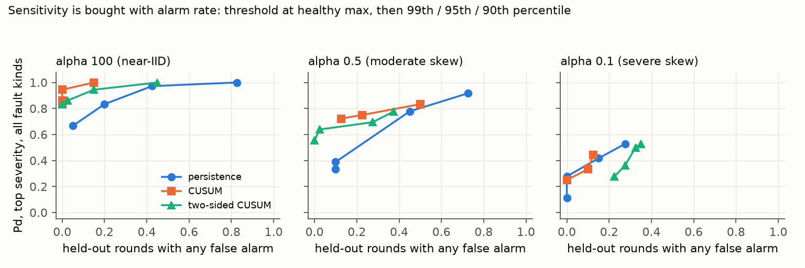
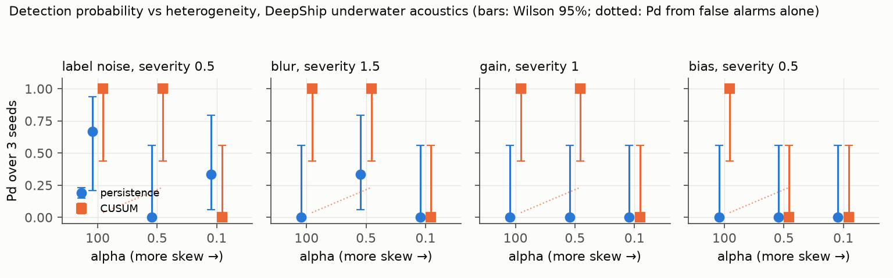
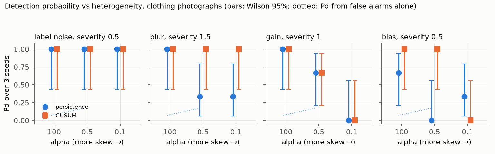
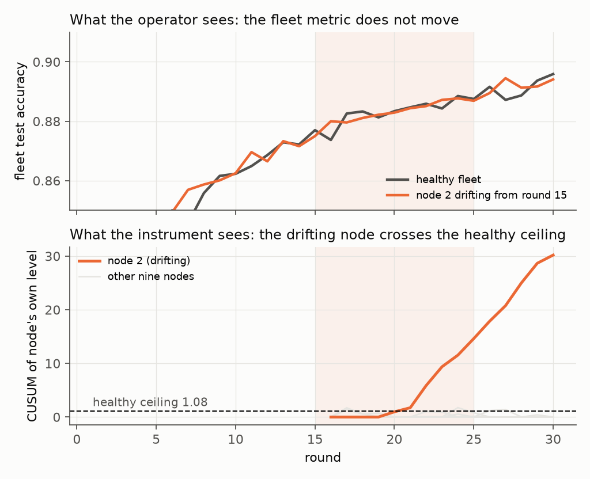
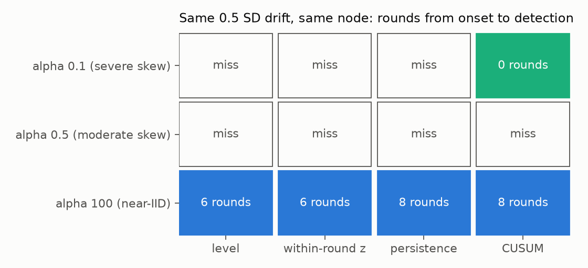
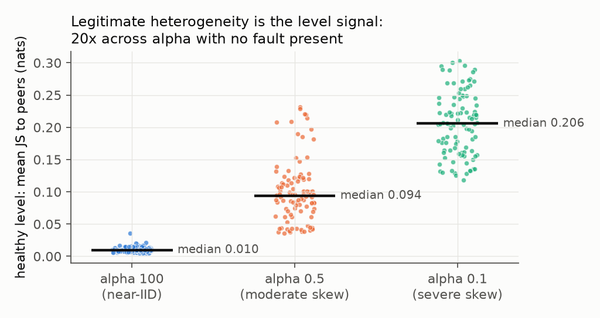
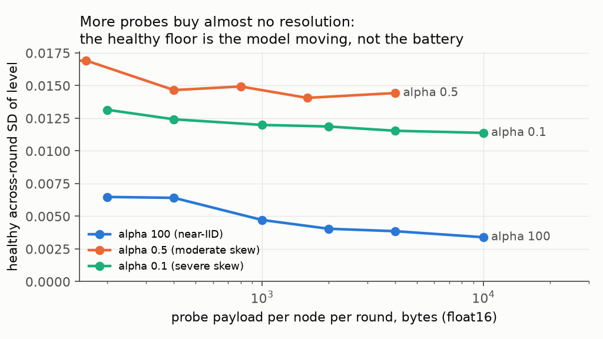

Generated from results/ by scripts/make_figures.py. Every number is read from a result file. The repository states no detection probability yet.

The exchange rate between sensitivity and alarm rate, per heterogeneity level: each statistic at four thresholds, from the healthy maximum down to the 90th percentile. Pd is over the top severity of every fault kind; the alarm rate is counted on healthy seeds the threshold never saw.

The same figure on real hydrophone recordings (DeepShip, four vessel classes). The cumulative statistic carries the same ordering by heterogeneity; the peer-persistence statistic does not transfer; nothing is caught under severe skew.

Detection probability over three seeds, per fault kind at its top severity, against heterogeneity. Persistence localises cleanly; CUSUM detects slow input drift that nothing else sees. Three seeds give a wide interval: a 3-of-3 reads as [0.44, 1.00].

One slow drift, two views: the fleet accuracy the operator watches does not move; the node's own cumulative divergence crosses the healthy ceiling five rounds after onset.

Detectability of the same fault falls monotonically with heterogeneity: every statistic near-IID, one at moderate skew, none at severe skew. Single seed, single node; the grid turns this into probabilities.

Why no fixed threshold can work: healthy cross-node divergence spans 20x across heterogeneity with no fault present.

The bandwidth tradeoff, measured: the healthy temporal floor barely moves from 200 bytes to 10 kB per node per round, because it is the model moving, not the battery being small.